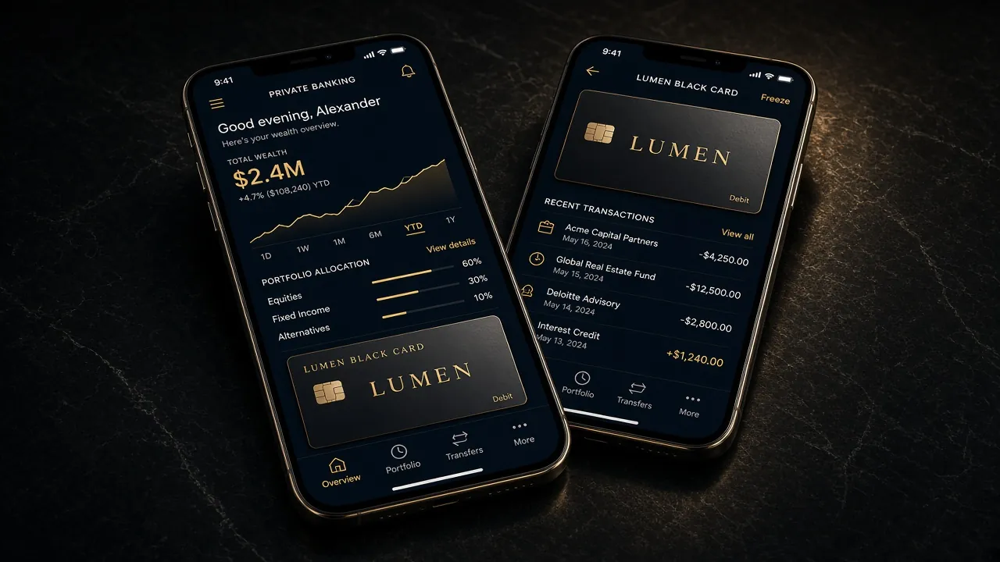
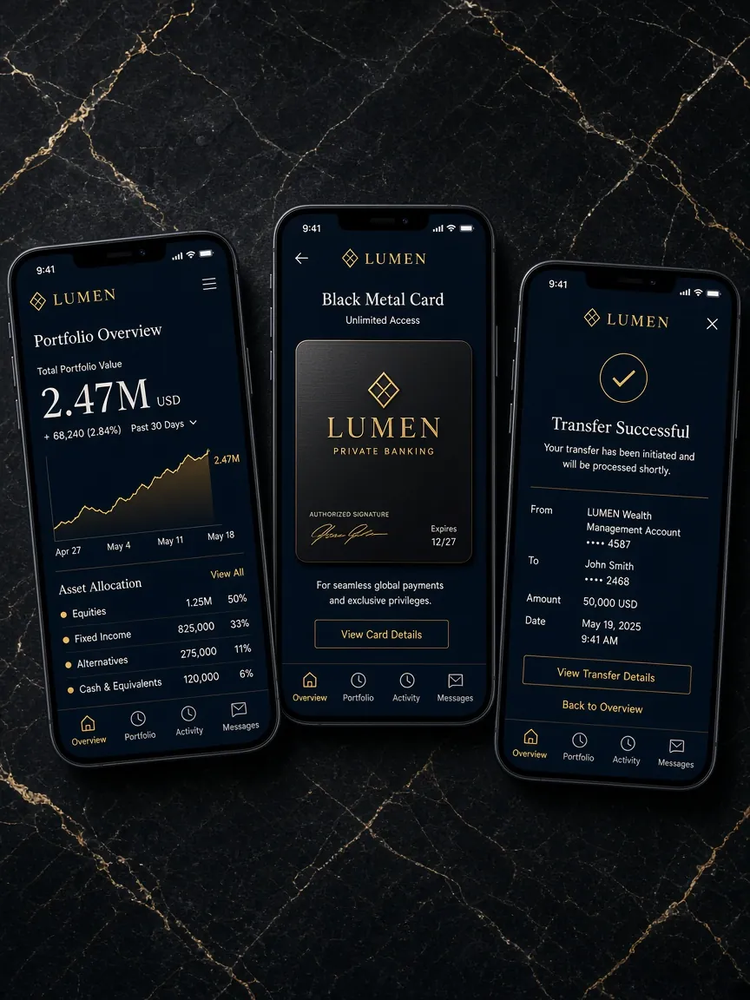

Lumen
Концепция банковского приложения: обзор, карта и перевод.
- Формат
- Mobile UI
- Фокус
- Иерархия и ясность действий
- Статус
- Концепт — не клиентский релиз

Задача концепта
Исследовать спокойную подачу финансового интерфейса, в котором обзор счёта, карта и перевод различимы как отдельные действия. Lumen не является приложением действующего банка.
Иерархия
Экран обзора делает сумму и график главными, экран карты концентрируется на самом объекте, а экран перевода — на завершённом действии. Тёмная поверхность и ограниченные золотые акценты связывают три состояния.
Три экрана
Показаны только существующие материалы. Числа, имена и финансовые данные внутри макетов — демонстрационные.

Концепт интерфейса. Сведения на изображении не относятся к реальному пользователю или банку.
Границы работы
Это визуальная и интерфейсная концепция трёх мобильных экранов. Она не представлена как работающий банковский сервис или клиентский проект.